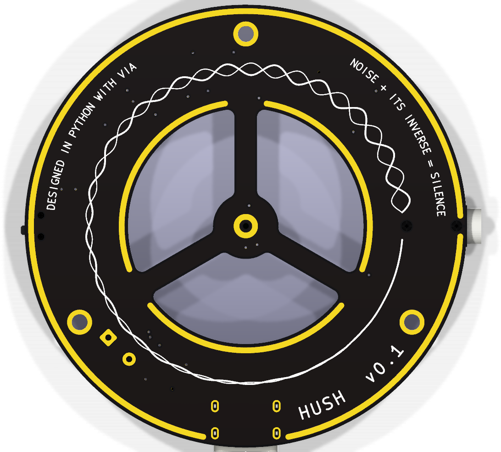

Blog ·
Hush, a speaker that plays the inverse of what it hears
- examples
- hush
- acoustics
- feedback
- simulation
Hush is a ring of circuit board that sits on the face of a 40 mm speaker. A microphone on its hub hears the noise in front of the cone, and the speaker plays its opposite. We asked for it as an example for Via, the kit an AI agent uses to design circuit boards. The agent designed the board, and we read its work, its checks and its mistakes.

What is on the ring
The ring is 62 mm across, with a 33 mm opening over the cone of a Dayton Audio CE40-4. Three spokes hold a hub, and the microphone on it sits 4 mm from the cone. Two operational amplifiers (op-amps), the basic analog gain block, turn its signal into the anti-noise. A class-D amplifier, whose outputs switch fully on and off, drives the speaker.
Music from a phone plays through the same speaker. The first op-amp subtracts it from the microphone's signal, so the loop does not cancel it. The board has four layers and 62 parts and runs no firmware. Its page shows it in 3D.
Sound is a push in the air
Sound is a small, fast swing in air pressure. Air at sea level presses at about 101,000 pascals (Pa). The 150 Hz hum in Hush's simulation swings that by 0.2 Pa, about two parts in a million. Two sounds at the same spot add, pascal for pascal. When one pushes up as the other pulls down by the same amount, the sum is zero. Physicists call this destructive interference.
Paul Lueg patented its use in "Process of silencing sound oscillations," US Patent 2,043,416, in 1936. In it, a microphone picks up the sound, and an amplifier and loudspeaker play it back in opposite phase. In the simulation, the speaker's wave reaches the microphone at 0.90 of the hum's size, upside down. What is left is 18.8 dB below the hum, about a ninth of its pressure.
Why low notes cancel and high notes do not
The opposite wave has to arrive in step with the noise. Any delay shifts the wave out of step, a phase error, and that error grows with frequency. The simulation models the air between cone and microphone as a 28 µs delay. The amplifier adds 2 µs. At 150 Hz, 30 µs is under 2 degrees of a cycle. At 1.5 kHz it is 16 degrees.
Wavelength, the distance from one pressure peak to the next, matters too. The quiet zone around the microphone spans a fraction of a wavelength. At 150 Hz the wavelength is 2.3 m, and at 1.5 kHz it is 23 cm.
In the simulation, the loop cancels from 50 to 500 Hz. Loop gain is what one trip around the loop multiplies a signal by. Hush's falls to one near 1.5 kHz. A digital processor would add tens of microseconds for its converters and arithmetic. Each microsecond costs about half a degree at 1.5 kHz. So the agent built the loop from analog parts.
Feedback, after Olson and May
In feedforward, a reference microphone hears the noise early. An error microphone at the quiet spot hears what is left. In feedback, one microphone sits at the quiet spot, and the circuit plays its signal back inverted.
Sen Kuo and Dennis Morgan survey both in "Active noise control: a tutorial review," Proceedings of the IEEE, 1999. Their systems run adaptive filters, whose settings follow the noise, in a digital signal processor (DSP). Their basic method, filtered-x least mean squares (FxLMS), adjusts the filter at each sample to shrink the error signal. The agent chose feedback over a DSP's adaptive feedforward, which needs a second microphone and firmware.
Harry Olson and Everett May described the feedback kind in 1953. Their paper, "Electronic sound absorber," appeared in the Journal of the Acoustical Society of America. Their absorber is a microphone, an amplifier and a loudspeaker in a feedback loop. Its abstract reports 10 to 25 dB less sound near the microphone, over three octaves of low notes. Hush uses the same loop.
The price of feedback
Hendrik Bode showed that quiet from a feedback loop in one band comes with a rise in another. It is in his book Network Analysis and Feedback Amplifier Design (Van Nostrand, 1945). Engineers call it the waterbed effect.
A feedback loop subtracts its output from its input. A half turn of phase, 180 degrees, turns that subtraction into an addition. With a loop gain of one there, the loop rings on its own, here as a whistle. Phase margin is how far the phase stays from that half turn where the loop gain is one. Capping the rise at 6 dB guarantees a phase margin of at least 29 degrees. Hush's requirements set that cap, and require 45 degrees.
The simulation shows a rise of 2.6 dB at most. At the worst corner, the worst mix of temperature and part tolerances, it reaches 5.9 dB. The phase margin is 76.9 degrees at the 1.5 kHz crossing, and 50.7 at the worst corner.
How the design went
The agent logged seven mistakes while it made Hush, M139 to M145 in the list of mistakes. Four were in the simulation, where each test is a deck, a circuit file for the simulator ngspice.
Diodes Incorporated publishes no simulation model for the PAM8302A amplifier, so the agent wrote one. The model gave half the datasheet's gain. The agent ran the loop decks on it before its own test deck. It then redid one round of tuning (M139).
TI's op-amp model matches its datasheet, but in the closed loop it gave false operating points. An operating point is the set of DC voltages a circuit rests at. In these, an op-amp's output sat pinned at its supply, and the numbers still passed their limits. The loop decks now run a model fitted to TI's, within 0.52 dB of it up to 10 kHz. Each loop deck also checks two DC voltages, so a false operating point now fails (M143).
The autorouter, FreeRouting, lays the copper tracks. It connected none of the amplifier's pins with the chip turned 26 degrees to follow the ring. Turned square, all of them connected (M142).
Each round, a reviewer who had not seen the board read its pictures and named the three worst problems. In the first round, the wave art on the back ended in the jack's peg hole. In the second, the + and - marks by the speaker's pads sat at the ring's angle. They read as "x" and "/". The agent fixed both.

The last run of the checks is GREEN with 6 warnings. The electrical rules check and the design rules check found no errors. Four warnings are for printed lettering where the jack and the switch overhang the edge. Two come from TI's model in its test deck. Seven decks made 986 runs at the corners. The noise at the microphone drops 7.5 dB at 50 Hz and 20.4 dB at 200 Hz. At the worst corner, those are 3.0 and 16.9 dB.
What is open
Nobody has ordered or built a Hush board, so every result here comes from simulation. The 4 mm from cone to microphone is an estimate from the speaker's drawing. The corners try 3 to 5 mm. The decks model the speaker in free air, and a box behind it would raise its resonance. Nobody has measured how far the quiet spreads beyond the microphone. The verification package, which ties each requirement to its proof, is not written yet. The README lists every open item.
We want v0.2 to start with the verification package. After that, we would like a board on a bench, with a second microphone beside the first.